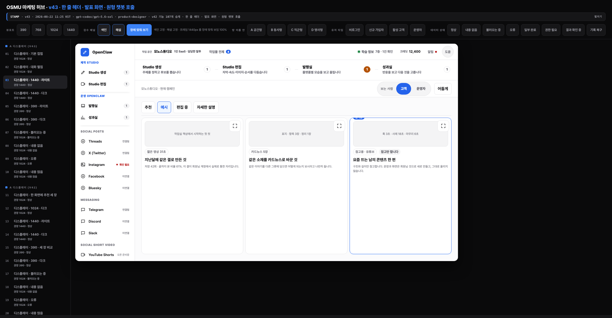
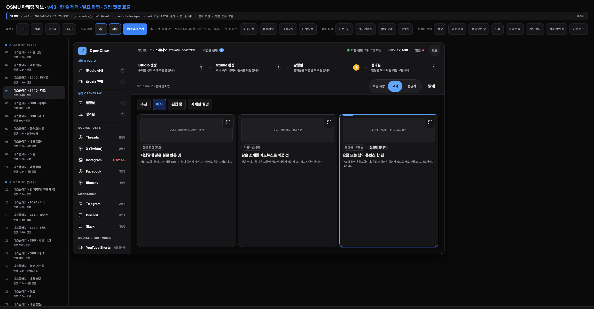
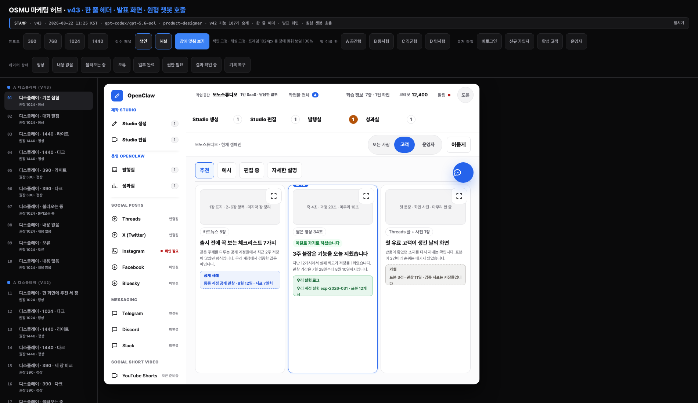
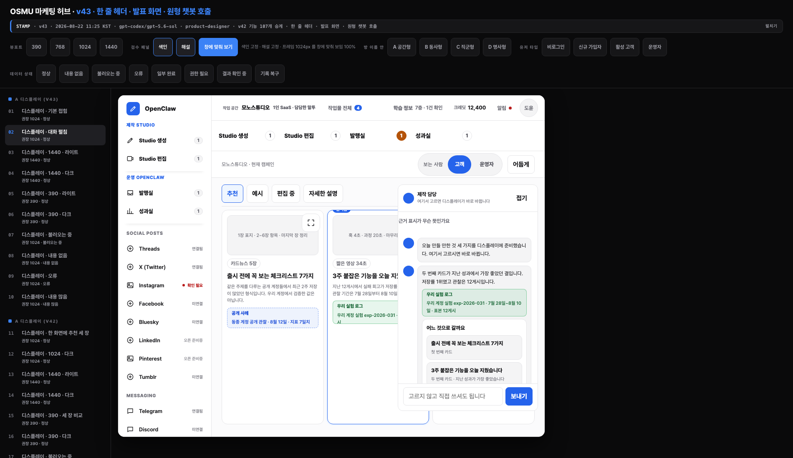
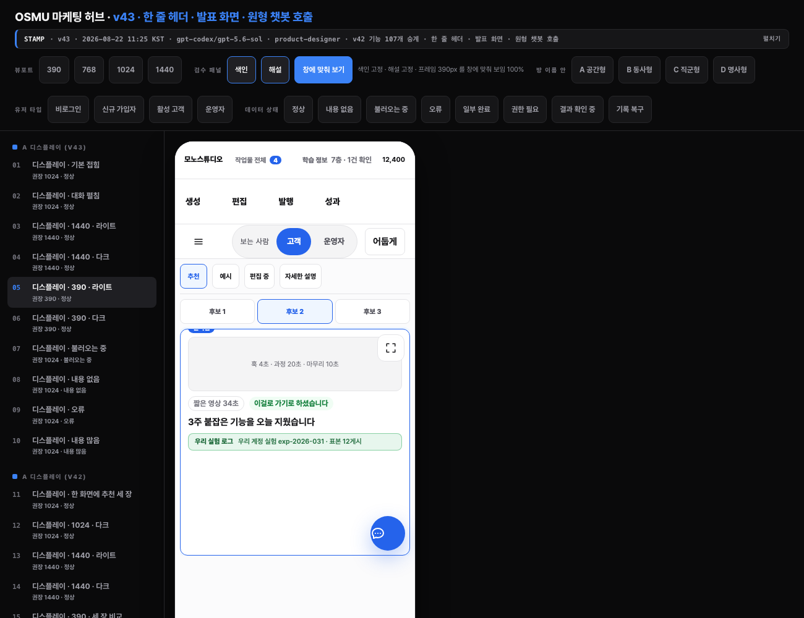
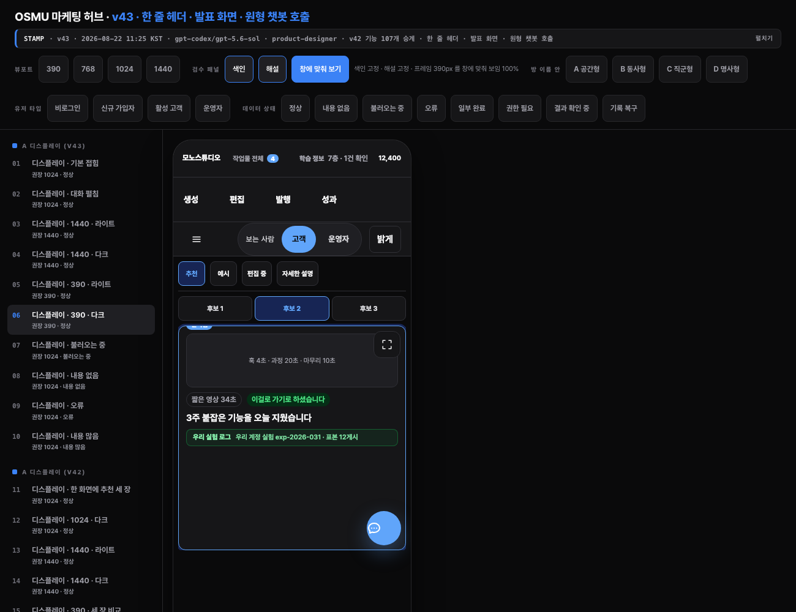

v43 카드 여백, 보시고 정해 주십시오
제가 텍스트로만 여쭤서 반려됐습니다. 실제 화면을 붙여 놓습니다.
무엇이 문제인가. 카드가 세로로 길게 늘어져 있고 내용은 위 삼분의 일에만 있습니다.
발표 화면처럼 다루라고 하셨는데 화면의 절반이 비어 있습니다.
1440 폭
라이트
다크
1024 폭 · 챗봇 펼친 상태
라이트
다크 · 챗봇 펼침
390 폭
라이트
다크
고르실 것
아래 회색 칸의 문장을 그대로 복사해 채팅에 붙여넣으시면 됩니다.
1. 미리보기를 키운다 추천
빈 자리를 실제 결과물 그림으로 채웁니다. 같이 보는 화면의 값이 미리보기에서 나오므로 본래 의도에 맞습니다. 대신 그림을 진짜처럼 만들어야 해서 손이 더 갑니다.
카드 여백: 1번. 미리보기를 키워라.
2. 카드 높이를 내용에 맞춘다
빈 자리를 없애고 카드를 짧게 줄입니다. 가장 빠릅니다. 대신 화면 아래쪽이 통째로 비어 남습니다.
카드 여백: 2번. 카드 높이를 내용에 맞춰라.
3. 카드를 여섯 장으로 늘린다
빈 자리는 사라지지만 한 화면 한 결정 원칙과 부딪힙니다. 고를 것이 많아지면 오히려 결정이 느려집니다.
카드 여백: 3번. 카드를 여섯 장으로 늘려라.
4. 그대로 둔다
지금이 문제 없다고 보시면 넘어갑니다.
카드 여백: 4번. 그대로 둬라.